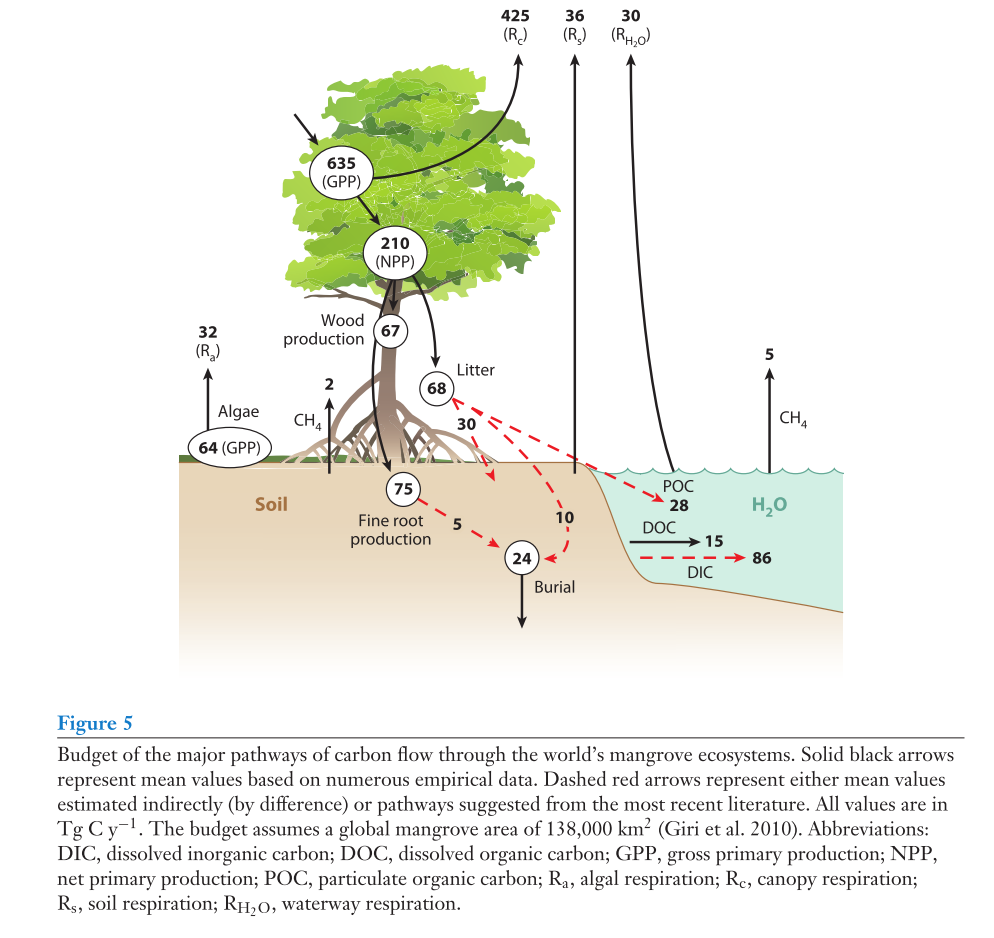

3.5 Carbon
3.5.1 Kristensen et al, 2008
“Organic carbon dynamics in mangrove ecosystems: A review” (Kristensen et al. 2008)
Key significance:
Origin of mangrove organic C
Stable isotopes can be effective in determining sourcing of organic C in sediments.
Mangrove sediments are generally relatively rich in organic C, with a median value of 2.2% and 28% of values between 2 and 5%.
Chemical composition of mangrove litter
Rhizophora leaves in particular have undergone extensive work on their chemical construction. Rhizophora leaves are comprised of: carbohydrates, amino acids, lignin-derived phenols, tannins, fatty acids, triterpenoids, and n-aklanes.
Mangrove litter thus provide a particular signature that is preserved during transformations and may be helpful in sourcing of organic C in mangroves.
- Carbohydrates form the bulk of mangrove tissue with rates of ~10-30% in leaves, and up to 65% in woody tissues.
- Amino acids from the second most
- Tannins form the third most. Mangrove have relatively high contents of tannins, which affects the feeding patterns of crabs. Leaching of tannins from leaf litter is important step in decomposition of leaf litter.
- Phenols derived from lignins form a smaller portion, and are more refractory than other molecular compounds.
- Fatty acids are useful in identifying sources of OM as they are uniquitous in living organisms and have biological specificity.
Foodwebs and role of fauna in OM processing
Mangrove derived OM is a key source of total OM, but additionally have OM sources from epiphytic algae, benthic microalgae, bacteria and fungi, and macroalgae and mixed OM imported by tidal currents.
Fauna play important roles in OM dynamics, for example the processing of litter into smaller pieces, as well as transport of litter into belowground pools. Important in nutrient dynamics, oxidation of soil, and oxidation of reduced compounds.
Organic matter decomposition and mangrove sediment biogeochemistry
Leaf letter that is not exported enters sediment and is processed by microorganisms. A stepwise process of decay may be exemplified as:
- Significant leaching of soluble organic substances - carbohydrates, tannins and phenolic compounds
- Extracellular enzymatic hydrolysis - mediated by aerobic and anaerobic prokaryotes and marine mycelial decomposers
- fungi particularly adapted for capture of cellulose-rich litter
Various controls on the speed at which leaf litter is decomposed exist, for example how wet it is (controls access to microbial decomposers; there is a sweet spot in terms of moisture for litter decomposition), or the C:N ratio of the litter (higher N = faster decomp rate).
Sedimentary decomposition pathways occur largely under anaerobic conditions:
- Large OM molecules split to smaller components by fermenting prokaryotes
- These molecules are then oxidized completely to CO2 by a wide variety of anaerobic microorganisms via electron acceptors in the following sequence: Mn4+, NO3-, Fe3+, and SO42-
Aerobic and sulfate reduction are the most important reduction processes in mangroves, and account for approximately 40-50% of OM reduction each. Thus, many mangroves have reduced inorganic S in form of FeS2 and S0.
Denitrification may be significant in areas impacted by sewage, but other studies have shown that dissimilatory reduction of nitrate to ammonium (DRNA) is capable of conserving large quantities of N in the form of ammonium and reduction of potential emissions of nitrogen species.
Sulfur reduction is hampered by the presence of more ready electron acceptors (O2 and Fe3+), and thus in environments in which Fe3+ is high, sulfur reduction may be less significant than Fe respiration.
Methanogenesis would occur if all electron acceptors are depleted; however ocean water provides steady supply of S and thus largely prevents system from reaching a point in which methanogenesis occurs.
The type of respiration that occurs is influenced by the forest conditions, in particular age: younger forests with potentially sandy substratum may exhibit more aerobic and Fe reduction whereas older forests with strong organic C input may exhibit sulfate reduction.
Burial and permanent storage in sediments
Carbon burial depends on environmental conditions. For example, older stands have higher productivity and consequently higher efficiency of C burial in sediments. There is also proportionally greater C burial in the low intertidal.
Other studies (see 4.4.5) have shown that mangrove soil organic carbon concentrations typically increase with time.
Outwelling hypothesis
Clear evidence that significant amounts (~half) of mangrove litter is exported to near coastal ecosystem, the use of this OM in coastal food webs is inconsistent.
The influence of OM exported from mangroves is likely limited to within a km or 2 from the forest. The lack of a major outwelling phenomena may be explained by:
- The distribution of exported mangrove litter depends on hydrogeomorphology, which may result in direct sedimentation in immediate vicinity of the forest
- Over the time-scale at which outwelling occurs, a significant fraction of litter is lost as DOC
Export of carbon to nearshore ecosystem is significant in mangroves and thus loss of mangrove globally may have had significant implications for DOC to the ocean.
3.5.2 Alongi, 2011
“Carbon payments for mangrove conservation: Ecosystem constraints and uncertainties of sequestration potential” (Alongi 2011)
Key significance: This articles addresses the discrepancy between ecosystem services expected from mangroves versus the thermodynamic constraints that exist within mangroves. In particular, the author discusses C sequestration in reference to forest type and time-scales.
Key notes:
Woodroffe, 2002 outlines six ways in which mangroves develop in relation to sea-level:
- Static conditions - surface accretes asymptotically until sediment raises forest floor above tidal range
- Constantly rising sea level - floor accretes at pace similar to SLR
- Fluctuation SLR rates - forest floor accretes with time above tidal range
- Stable SL but episodic subsidence - floor accretes back to tidal range
- Rising SL and episodic subsidence - response is complex but overall pattern is net accretion
- Rising SL but no episodic subsidence or change in sediment volume - floor is set back or abandoned
Sites are heterogeneous in sediment accumulation, and thus short-term or small-scale studies have a difficult time providing an accurate picture of actual sedimentation patterns.
C fluxes: young vs. old, monospecific vs. mixed forests
Mangroves are suitable for REDD+ schemes, but lack a common “mature” successional phase given repeated disturbance, which must be incorporated into understanding of C dynamics.
Relationship between forest age and NPP shows prolonged maturity or arrested progression occurs under disturbance.
Although photosynthesis asymptotes, contributions of organic C to soil components proceed over very long periods of time.
In R. apiculata forests, there is considerable evidence that MSY is obtained from 30 year-old forests given maximum photosynthetic rates that occur.
Studies in mangrove plantations show that mangroves generally adhere to the -3/2 self-thinning law. This would indicate that C payments after 30 years will begin to decrease, and thus these must be incorporated into long-term conservation plans.
-3/2 self-thinning law is the regression slope of tree density vs tree diameter.
Issue of uncertainty
Net ecosystem productivity in mangroves has been estimated at 112 Tg C per yr (Bouillon 2008) and 155 Tg C per yr (Alongi, 2009).
Many processes in mangroves are non-linear, which must be accounted for in PES schemes and management plans.
3.5.3 Alongi, 2012
“Carbon sequestration in mangrove forests” (Alongi 2012)
Key significance: This article is Daniel Alongi’s own mechanistic review of carbon sequestration in mangroves. There is considerable overlap with some of the other reviews that are listed here.
Key notes:
Carbon allocation and ecosystem storage
In understanding C sequestration in mangroves, it is critical to understand the various pools from C sequestration by mangrove trees:
- Approximately 50% is respired by trees, though this is rough estimate given limited data, particularly for root systems
- Root respiration and production is particularly difficult to measure
- Recent analyses suggest greater proportions of C may be allocated to roots in mangroves than other trees
The relative dominance of the belowground pool in ecosystem C appears to be a global pattern.
Most living roots are within top 40 cm of soil, but the sloughing off of fine roots can be considerable and be a large addition of C to soil.
Large dead root pool may be a nutrient conserving mechanism, in that new roots can enter dead root channels and reassimilate released nutrients from decomposing biomass. Extensive root growth may also aid in uptake of water, other nutrients, as well as stabilize against tide and winds.
Rates of soil accretion & C sequestration
Over short-term, C is stored in biomass whereas over long-term, C is stored primarily belowground.
Sediment accretion averages 5 mm per yr globally, but some highly-impacted sites (e.g., in China) show rates of up to 44 mm per yr.
Frequency of tidal inundation is the primary factor in determining the rate of accretion.
Deforestation of mangroves results in collapse of peat soils and may result in significant emissions of CO2, which may be up to 2-10% of emissions from tropical deforestation.
Global significance
Mangroves account for approximately 3% of C sequestration though they occupy <1% of total area of tropical forests.
3.5.4 Asner, 2013
“High-fidelity national carbon mapping for resource management and REDD+” (Asner et al. 2013)
Key significance: This is Asner’s mapping of Carbon in Panama that exemplifies a scaling approach of plot-based to airborne lidar to satellite imagery. A key aspect of the study is that they also produce maps of uncertainty around C stocks for the entire country.
Key notes:
The study used lidar data top-of-canopy height (TCH) to scale allometric estimates of biomass, and then subsequently plugged that into a quantitative model at the national level that employed lidar and satellite based data of elevation, slope, climate and fractional canopy cover to carbon storage patterns.
The process achieved uncertainties of ~10%, which they note is within the bounds of uncertainty for plot-based estimates of AGC.
The plot based and lidar based data was scaled to the national level using two different techniques: a) a RandomForest algorithm, and b) stratification of satellite input variables into 2039 unique classes.
Interestingly, the study also notes the cost of plot-based vs. RS field work on a per ha scale. While 1-ha plot-based measurements of AGC cost 3-5k USD, 1-ha of lidar data collection is estimated at 1 USD. Although the total cost of flying lidar for Panama was large, the cost at a per ha scale was rather affordable.
The uncertainty in regions in which they flew lidar is extremely low relative to other regions.
Key criticisms - Wayne’s key criticism is how they used the Chave generic allometric equation for all trees in the country, although I somewhat can understand the rationale here.
3.5.5 Alongi, 2014
“Carbon cycling and storage in mangrove forests” (Alongi 2014)
Key significance: This ARMS review paper covers carbon dynamics in mangroves with a focus on both mechanistic processes as well as mean ecosystem and global budgets. The paper is an excellent overview of the state of knowledge on C dynamics in mangroves.
Key notes:
The primary sources of carbon within mangroves are:
- Trees that fix atmospheric carbon via photosynthesis
- Macroalgae colonizing aboveground roots and the forest floor
- Transport and deposition of materials from adjacent ecosystems
Although the relative contributions depend upon site location and geomorphological conditions, most C is produced in sit and stored belowground.
NPP
Mangroves have high NPP, typically higher than that of other coastal systems, but relatively equivalent to coral reefs. Mangrove NPP rates are approximately equivalent to both humid tropical forests as well as peat swamp forests.
Although inconclusive, there is evidence that disturbance may prolong maturation of forests and thus have long-term production and sequestration of C in mangroves (photosynthetic rate increases rapidly in first 20 years, but levels off without declining for up to 80 years).
Sedimentation
Mass balance approaches in mangroves determined to be highly inaccurate.
Frequency of tidal inundation is primarily control on sedimentation rates, i.e., forests further from the sea experience less sedimentation.
Size, shape and distribution patterns of trees are critical in sedimentation in mangroves.
Burial rates of carbon in soils are estimated by difference between carbon losses (export, consumption and mineralization) and annual accumulation rates (rest is presumed to be preserved).
Global estimate for soil C burial rate in mangroves is approximately 24 Tg C per yr. Relatively small on global scale, but is significant given their occupation of a relatively small amount of global coastal ocean area ~0.5%.
Some estimates place deforestation of mangroves at comprising approximately 2-10% of global CO2 emissions from deforestation.
Losing carbon
Key losses of carbon are due to respiration and tidal export. Majority of respiration is from trees.
Tidal export is a key process that is relatively poorly understood. May occur as:
- Particulate organic carbon - export of particulate organic matter (leaves, bark, branches, etc.); accounts for approximately 10-11% of terrestrial carbon input to ocean
- Dissolved organic carbon - organic carbon that is able to pass through a filter
- Dissolved inorganic carbon - mangrove contribution of DIC to ocean is disproportionate to areas of waterways and creeks; tidal pumping from forest floor is likely significant
- microbial metabolism in deep soil results in CO2 production, which dissolves in interstitial waters and is exported to coastal ocean (aerobic respiration and sulfate reduction are usually major pathways, though Fe and Mn reduction may also be important)
Global carbon budget
A schematic of the global carbon budget in mangroves is displayed below:

Of key significance is that approximately 24 Tg C per yr is buried globally, and approximately 60% of mangrove NPP is estimates to be exported as dissolved and particular carbon to coastal ocean (~129 Tg C per yr).
References
Kristensen, Erik, Steven Bouillon, Thorsten Dittmar, and Cyril Marchand. 2008. “Organic Carbon Dynamics in Mangrove Ecosystems: A Review.” Aquatic Botany 89 (2): 201–19. doi:10.1016/j.aquabot.2007.12.005.
Alongi, Daniel M. 2011. “Carbon Payments for Mangrove Conservation: Ecosystem Constraints and Uncertainties of Sequestration Potential.” Environmental Science & Policy 14 (4): 462–70. doi:10.1016/j.envsci.2011.02.004.
Alongi, Daniel M. 2012. “Carbon Sequestration in Mangrove Forests.” Carbon Management 3 (3): 313–22. doi:10.4155/cmt.12.20.
Asner, Gregory P, Joseph Mascaro, Christopher Anderson, David E Knapp, Roberta E Martin, Ty Kennedy-Bowdoin, Michiel van Breugel, et al. 2013. “High-Fidelity National Carbon Mapping for Resource Management and Redd+.” Carbon Balance and Management 8 (1): 7. doi:10.1186/1750-0680-8-7.
Alongi, Daniel M. 2014. “Carbon Cycling and Storage in Mangrove Forests.” Annual Review of Marine Science 6: 195–219. doi:10.1146/annurev-marine-010213-135020.